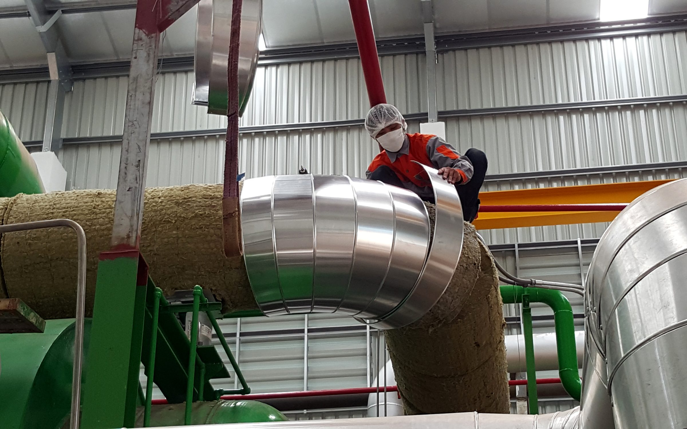
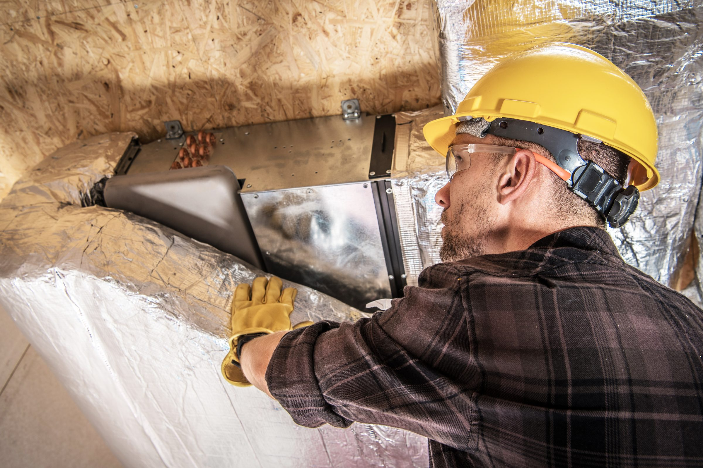
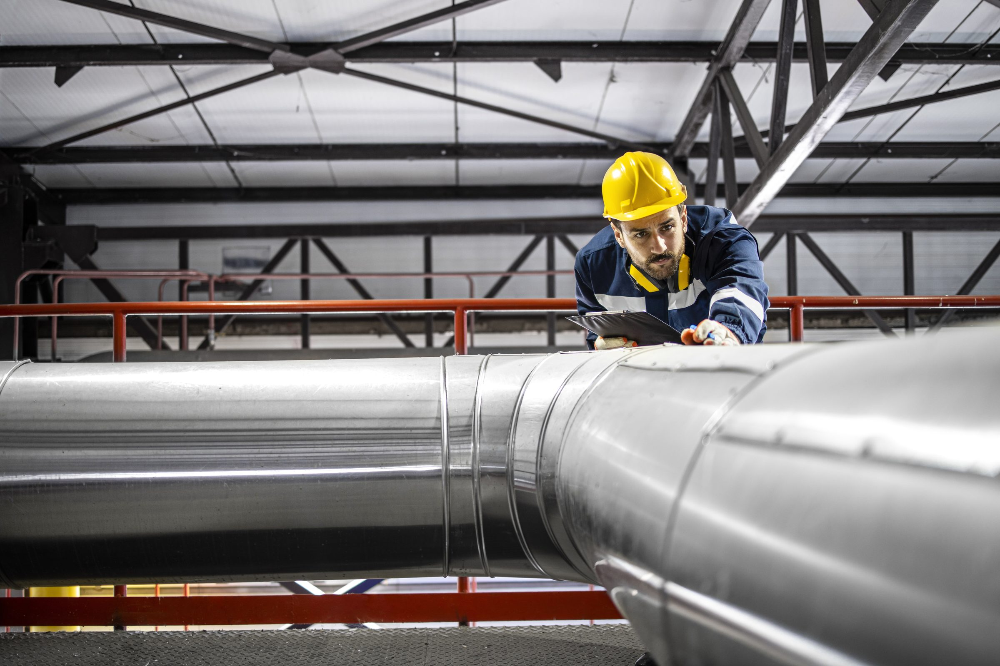

Top strip: the photo as the start page shows it on a laptop (wide crop, black and white). Below it: the whole photo. H1–H4 are already downloaded; H5 onwards are new Magnific finds, all real photos.

H1 Steam piping insulation installation, power plant (crew at cladding)already downloaded · 30824605

H2 HVAC worker finishing air duct insulationalready downloaded · 181921117H3 Man in safety gear inspecting overhead pipesalready downloaded · 392800604

H4 Worker inspecting pipes, refinery (used on Über uns banner)already downloaded · 38735411
H5 Oil and gas worker walking through a maze of pipesnew · Magnific 272686852
H6 Industrial worker walking through a refinerynew · Magnific 428405227
H7 Engineer walking through a refinerynew · Magnific 428077972
H8 Three workers in hard hats inspect pipesnew · Magnific 274194305
H9 Two workers walking on a platformnew · Magnific 270649947
H10 Technician in a heating plant, room full of pipesnew · Magnific 39912894
H11 Technician installing ventilation ducts in a warehousenew · Magnific 42801795